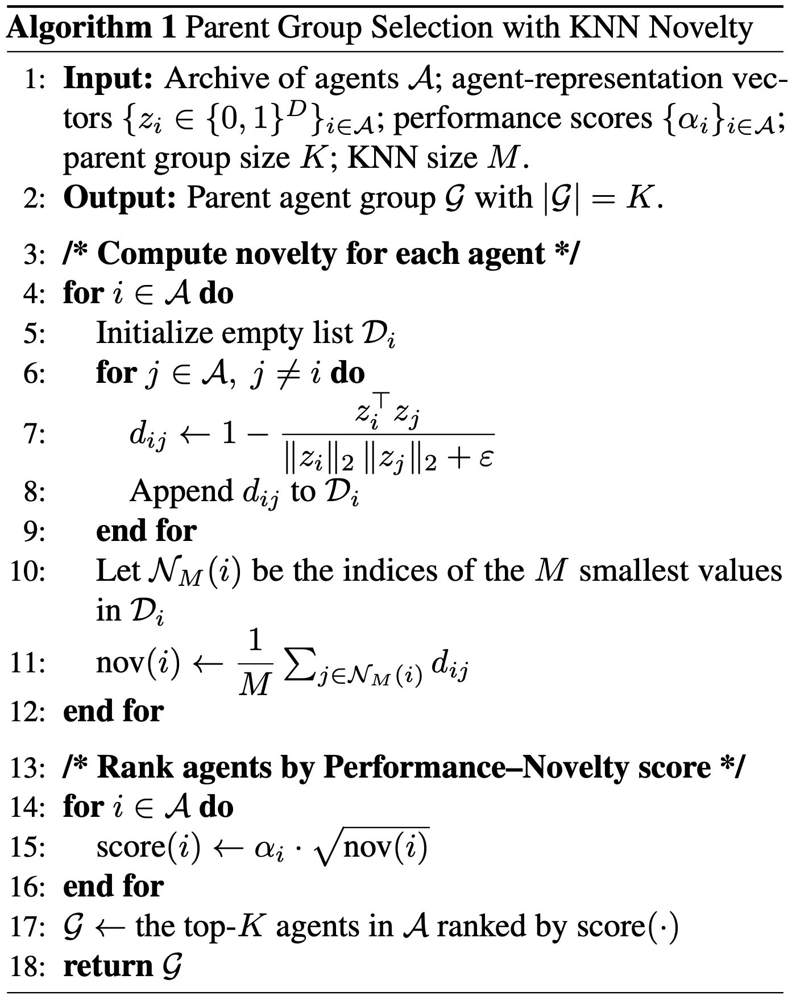
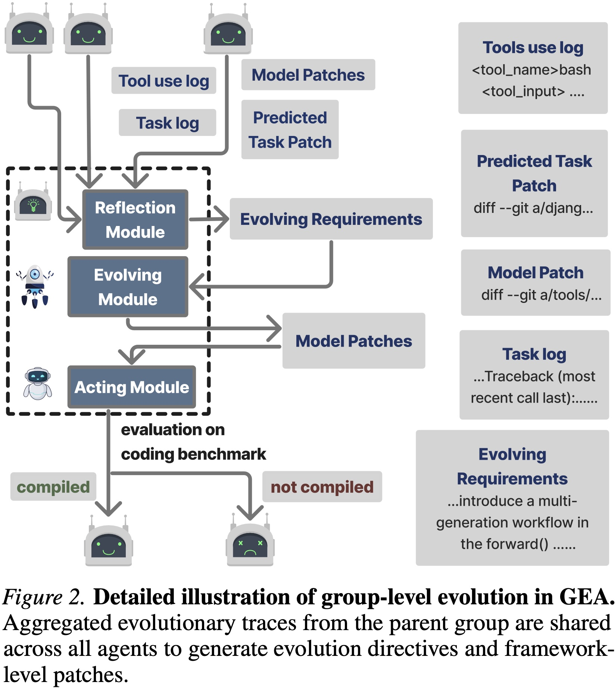
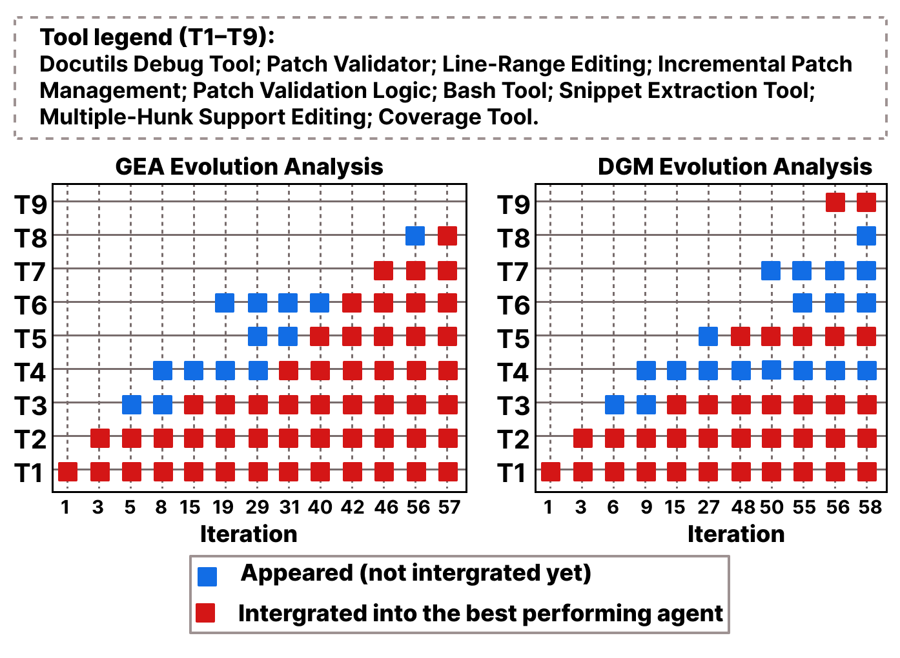
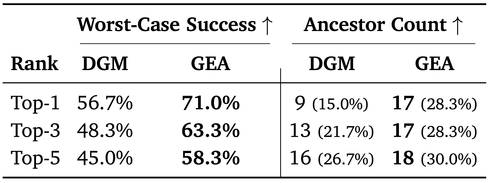

Open-ended self-improving agents can autonomously modify their own structural designs to advance their capabilities and overcome the limits of pre-defined architectures, thus reducing reliance on human intervention. We introduce Group-Evolving Agents (GEA), a new paradigm for open-ended self-improvement that treats a group of agents as the fundamental evolutionary unit, enabling explicit experience sharing and reuse within the group throughout evolution. Unlike existing self-evolving paradigms that adopt tree-structured evolution, GEA overcomes the inefficient utilization of exploratory diversity caused by isolated evolutionary branches. We evaluate GEA on challenging coding benchmarks, where it significantly outperforms state-of-the-art self-evolving methods (71.0% vs. 56.7% on SWE-bench Verified, 88.3% vs. 68.3% on Polyglot) and matches or exceeds top human-designed agent frameworks (71.8% and 52.0% on the two benchmarks, respectively). Analysis reveals that GEA more effectively converts early-stage exploratory diversity into sustained long-term progress, achieving stronger performance under the same number of evolved agents. Furthermore, GEA exhibits consistent transferability across different coding models and greater robustness, fixing framework-level bugs in 1.4 iterations on average, compared to 5 iterations for self-evolving methods.
Parent Group Selection + Open-Ended Group Evolution

At each iteration, GEA selects a parent group using a Performance-Novelty criterion.
The key idea is to balance the immediate task-solving competence with long-term evolutionary diversity and potential.

The parent group jointly produces an offspring agent group by aggregating
evolutionary experiences from individual agents into a shared experience pool.
This shared experience pool — including tool-use traces, patches, and successful strategies —
is then provided to each agent to guide adaptive improvements (Figure 2).
Through explicit experience sharing, agents can reuse complementary discoveries
and continuously refine their codebases while maintaining evolutionary diversity.

Figure 4. Evolution analysis of tool discovery and integration over iterations. Each row (T1--T9) corresponds to a key tool-level functionality. Blue markers indicate tools that have been discovered but not yet integrated into the current best agent, while red markers indicate tools integrated into the best-performing agent.

Table 1. Comparison of performance (Success Rate) and ancestor integration across the Top-k agents on SWE-bench Verified. Performance is reported as the worst-case (minimum) success rate among the top-k agents. Ancestor Count denotes the count of unique historical agents integrated into the solution. Notably, the worst-case performance of GEA's top-5 agents (58.3%) exceeds the single best agent from DGM (56.7%).
@misc{weng2026groupevolvingagentsopenendedselfimprovement,
title={Group-Evolving Agents: Open-Ended Self-Improvement via Experience Sharing},
author={Zhaotian Weng and Antonis Antoniades and Deepak Nathani and Zhen Zhang and Xiao Pu and Xin Eric Wang},
year={2026},
eprint={2602.04837},
archivePrefix={arXiv},
primaryClass={cs.AI},
url={https://arxiv.org/abs/2602.04837},
}